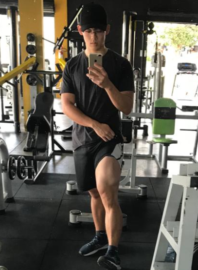

Currículo
-
Matheus Yuki Itinoseki
-
19 anos
-
Curitiba-PR
Objetivos
- Estou no início da minha carreira como programador, acredito que eu posso aprender e entregar bons resultados para a empresa, assim como, adquirir conhecimento e experiência na área, durante o tempo que estivermos juntos.
Experiências
Duda Belli bar
- Garçom 22/09/2020 a 26/03/2021
- Responsável pelo estoque de bebidas, fazer lista de compras, produzir os drinks, organização e
limpeza do local.
- Elaborei e adicionei a carta de drinks ao bar, que antes não havia.
Agropet Carminati
- Repositor 10/05/2021 a 02/02/2022
- Atendia clientes.
- Organizava a loja e estoque.
Colla info 02/22 a 12/22
- Realizava manutenção de computadores e notebooks.
- Instalação de software.
- Atualização de computadores.
- Freelancer em eventos e estabelecimentos.
Educação
- ensino médio completo.
- Inglês intermediário.
- Cursando programação pela alura.
- Microsoft Office: Word (conhecimento básico), Excel (conhecimento intermediário), Power Point
(conhecimento básico).
